FINAL DA MISS�O - MORTE
AVISO DIVINO
N�o fazia muito tempo que ele
estava em Mil�o. Certa madrugada, imerso na contempla��o, recebeu de DEUS um
aviso que morreria em breve. Sentiu uma 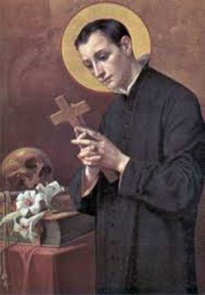
Sim, e na verdade, DEUS quis. Naquele mesmo dia, o Padre Bernardino Rosignoli veio comunic�-lo, que o Padre Geral o queria em Roma. E pouco tempo depois, chegou � ordem oficial do Padre Claudio Acquaviva. Luiz ficou profundamente feliz e agradecido.
ORDEM DO SUPERIOR
Nos primeiros dias de Maio de 1590, por ordem do Padre Geral, viajou de Mil�o a Roma, com o Padre Mastrilli e diversas outras pessoas. A alegria de Lu�s por se encontrar entre os seus velhos Superiores foi igual � deles por rev�-lo de volta. Entre os seus companheiros, Lu�s revelou mais do que nunca as suas qualidades e a alegria do seu cora��o. Era a bondade personificada, af�vel, paciente e obsequioso para com todos.
A PESTE ALASTROU VIOLENTAMENTE
No final de 1590 e no in�cio de 1591, a peste espalhou terrivelmente na Europa, e justamente numa �poca de magras safras, em que as colheitas n�o prosperaram e os preju�zos foram muito grandes para as na��es. Foram anos de muita tristeza, l�grimas e desola��o. A peste chegou matar tr�s Papas: Sixto V, Urbano VII e Greg�rio XVI.
As autoridades, civis e militares, unidas ao clero, fizerem de tudo para aliviar t�o grande mal. Somente na cidade de Roma, estimou-se que mais de 60.000 pessoas perderam a vida. Os Jesu�tas, como sempre, estavam na primeira linha de combate. Abriram um Hospital no pal�cio do Conde Petroni, e receberam todos os doentes, dando-lhes assist�ncia material e espiritual. O Geral Padre Acquaviva, abastecia de alimentos mais de 300 pobres e, outros tantos eram cuidados e tratados no Noviciado de Santo Andr�.
Lu�s diante de t�o grande calamidade, n�o quis continuar s� pedindo esmolas, ele tamb�m desejou cuidar pessoalmente dos empestados, tornando-se enfermeiro junto ao Hospital de S�o Sixto. Entretanto, a terr�vel onda de peste e a gravidade dos casos tratados naquele Hospital, levaram os Superiores a proibirem Lu�s de continuar se arriscando auxiliando l�, mas lhe permitiram ajudar no Hospital de Santa Maria da Consola��o.
No dia 3 de Mar�o de 1591, caminhava para o Hospital de Santa Maria, quando viu um pobre homem cair em plena cal�ada na rua, fulminado pelo fatal cont�gio. Lu�s se aproximou rapidamente, tomou-o nos bra�os e o conduziu ao Hospital, prestando-lhe os primeiros cuidados.
MORTE DE LU�S
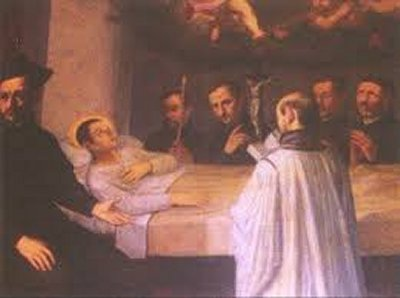
E assim, as noticias das melhoras do Lu�s deixou os seus familiares mais alegres e cheios de esperan�as. Todavia, na continuidade dos dias, a mol�stia se complicou ainda mais, atingiu os pulm�es gerando a tuberculose, isto acompanhado de uma febre lenta, que voltou manhosa e renitente. E desse modo, o mal foi progredindo inexoravelmente.
A um de seus colegas que foi visit�-lo declarou:
- �N�o sabeis a boa not�cia que recebi, de que vou morrer dentro de oito dias. Por favor. Ajude-me a recitar o Te Deum, para agradecer ao SENHOR este favor que ELE me faz�.
A seguir, procedeu �s �ltimas despedidas.
No dia 20 de Junho de 1591 (Oitava do Corpo de DEUS), o enfermeiro lhe falou: �Irm�o Lu�s, eis que estamos aqui vivos e n�o mortos, como diz�eis v�s�.
- �Contudo, vou morrer hoje�� confirmou o Santo.
Tamb�m outro Padre, visitando-o, disse-lhe: �Irm�o Lu�s, me haveis dito que ias morrer dentro desta Oitava. Eis, por�m, que j� estamos no �ltimo dia dela, e at� me parece que estais bem melhor, e inclusive fazendo-nos pensar que � poss�vel viver mais ainda�...
Luis apenas sorriu e respondeu: �O dia ainda n�o terminou�.
O Sumo Pont�fice Papa Greg�rio
XIV, informado pelos Cardeais parentes do Lu�s, sobre o estado de sa�de dele,
bem como de sua predi��o de que 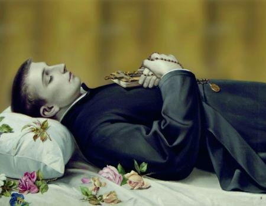
NA GL�RIA DE DEUS
Muitos milagres aconteceram pela intercess�o de S�O LUIZ GONZAGA. Muitas pessoas, em todas as partes suplicaram a intercess�o dele, para que conseguisse de NOSSO SENHOR, a miseric�rdia e as gra�as Divinas, em benef�cio das suas necessidades.
A 12 de Maio de 1604, o S�nodo de M�ntua, seguindo as normas do Direito Can�nico, proclamou Lu�s �Beato�, sendo Br�scia, uma das primeiras Dioceses a vener�-lo sob esse t�tulo. No dia 28 de Julho, do mesmo ano, Dona Marta, a m�e do Lu�s, teve o singular privil�gio de assistir na Igreja da Companhia de Jesus em Castiglione, a primeira Santa Missa cantada em honra do seu filho. Sua festa passou a ser celebrada, todos os anos, no dia 21 de Junho. Em 1608, a Sagrada Congrega��o, declarou que o Beato Lu�s era digno de ser Canonizado, e o Sumo Pont�fice Papa Paulo V, aprovou o culto p�blico, concedendo a celebra��o de Missas e Of�cio em todos os dom�nios dos Gonzaga, bem como nas Igrejas da Companhia de Jesus, em Roma. Na continuidade e conclus�o do processo can�nico, O Papa Bento XIII o proclamou �Santo� no dia 31 de Dezembro de 1720.

FOTOGRAFIAS
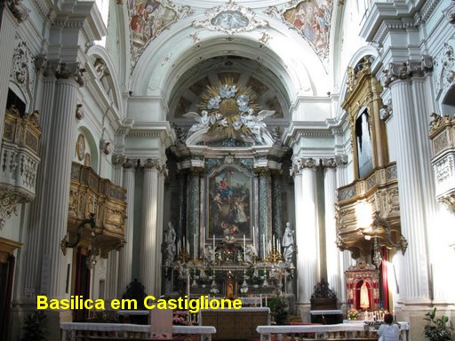
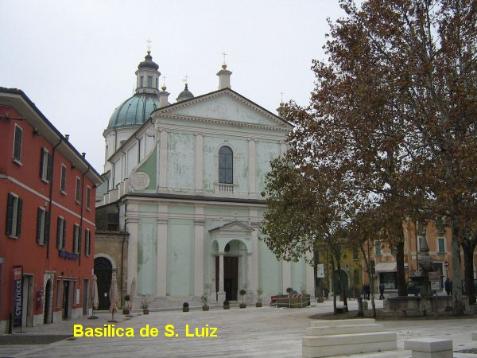
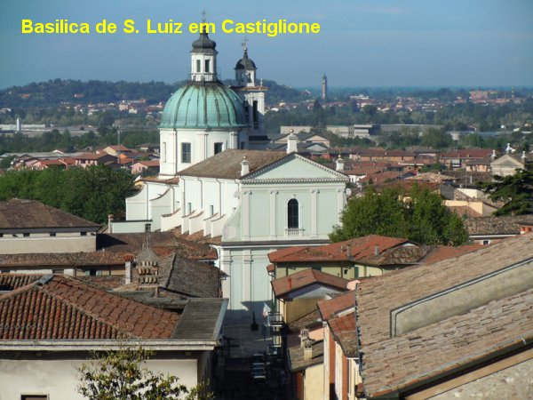
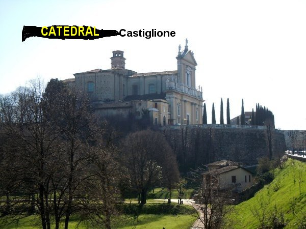
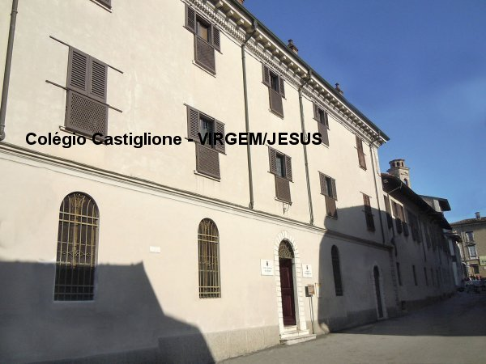
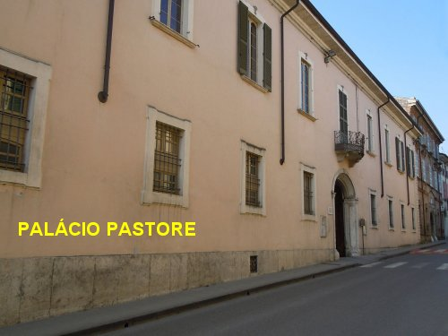
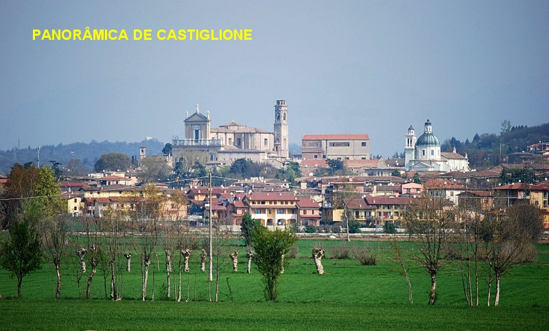
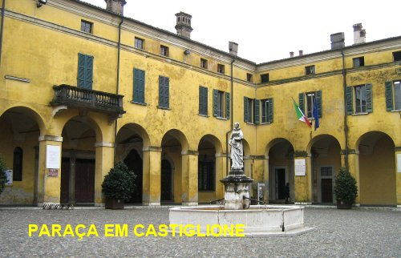
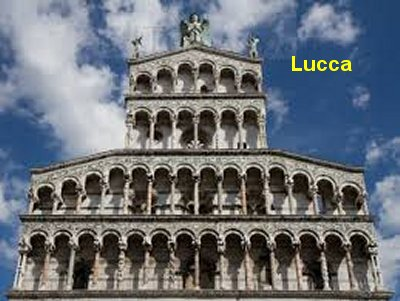
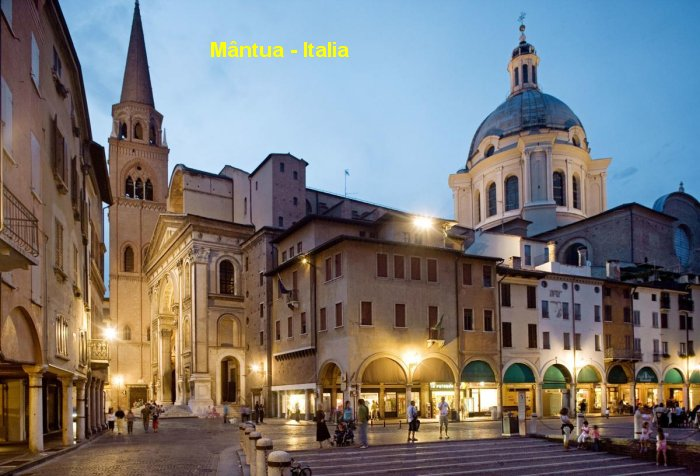
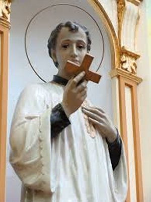
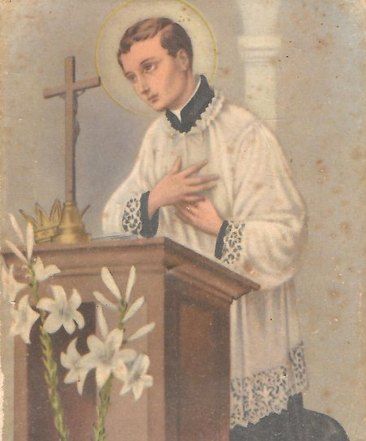
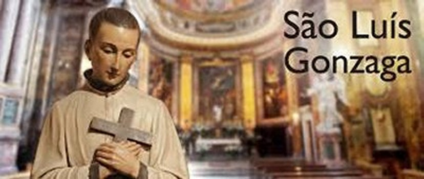
CONVITE
Visite o PORTAL DO APOSTOLADO no endere�o abaixo, e tenha a oportunidade de conhecer os nossos Sites, todos eles constru�dos bem fundamentados na Sagrada Escritura, nas Tradi��es Crist�s, nas Manifesta��es Sobrenaturais e na Vida e Obra dos Santos, com o objetivo de informar somente a verdade.
http://www.apostoladosagradoscoracoes.com/
Desejando se comunicar conosco favor clicar na figura abaixo:

FIRMAS DE BUSCAS